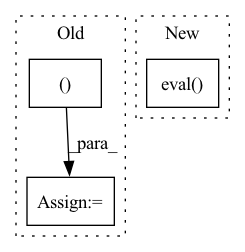

Pattern ID :1304
Before Change
print("{} model, anchors, and classes loaded.".format(self.model_path))
// 画框设置不同的颜色
hsv_tuples = [(x / len(self.class_names), 1., 1. )
for x in range(len(self.class_names))]
self.colors = list(map(lambda x: colorsys.hsv_to_rgb(*x), hsv_tuples))
self.colors = list(
map(lambda x: (int(x[0] * 255), int(x[1] * 255), int(x[2] * 255)),
self.colors))
After Change
self.net = YoloBody(self.anchors_mask, self.num_classes)
device = torch.device("cuda" if torch.cuda.is_available() else "cpu")
self.net.load_state_dict(torch.load(self.model_path, map_location=device))
self.net = self.net.eval()
print("{} model, anchors, and classes loaded.".format(self.model_path))
if self.cuda:
In pattern: SUPERPATTERN
Frequency: 3
Non-data size: 3
Instances Fragment ID: 6386673
Project Name: bubbliiiing/yolov4-pytorch
Commit Name: 34d2e3e10b07fd5a27a911b0800fb8354f1949a7
Time: 2021-09-21
Author: 47347516+bubbliiiing@users.noreply.github.com
File Name: yolo.py
M Class Name: YOLO
N Class Name: YOLO
M Method Name: generate(1)
N Method Name: generate(1)
M Parent Class: object
N Parent Class: object
M File Name: yolo.py
N File Name: yolo.py
M Start Line: 83
M End Line: 112
N Start Line: 94
N End Line: 98
Before Change
if torch.cuda.is_available():
model = model.half().cuda()
with torch.no_grad():
out = model(torch.rand((batch_size, *input_shape ), dtype=torch.float16).cuda())
assert out.dtype == torch.float16
After Change
model = classification.__dict__[arch_name](pretrained=True).eval()
_test_classification(model, input_shape, output_size)
// test pretrained model with different num_classes
model = classification.__dict__[arch_name](pretrained=True, num_classes=108).eval()
_test_classification(model, input_shape, output_size=(108,))
@pytest.mark.parametrize( Fragment ID: 6386672
Project Name: mindee/doctr
Commit Name: 6e806ca3f8ae19e67a2e8c95ee04bf3da1381602
Time: 2022-04-05
Author: felixdittrich92@gmail.com
File Name: tests/pytorch/test_models_classification_pt.py
M Class Name: AnonimousClass
N Class Name: AnonimousClass
M Method Name: test_classification_architectures(3)
N Method Name: test_classification_architectures(3)
M Parent Class:
N Parent Class:
M File Name: tests/pytorch/test_models_classification_pt.py
N File Name: tests/pytorch/test_models_classification_pt.py
M Start Line: 26
M End Line: 42
N Start Line: 42
N End Line: 46
Before Change
print("{} model, anchors, and classes loaded.".format(self.model_path))
// 画框设置不同的颜色
hsv_tuples = [(x / len(self.class_names), 1., 1. )
for x in range(len(self.class_names))]
self.colors = list(map(lambda x: colorsys.hsv_to_rgb(*x), hsv_tuples))
self.colors = list(
After Change
device = torch.device("cuda" if torch.cuda.is_available() else "cpu")
self.net.load_state_dict(torch.load(self.model_path, map_location=device))
self.net = self.net.eval()
print("{} model, and classes loaded.".format(self.model_path))
if self.cuda:
Fragment ID: 6386678
Project Name: bubbliiiing/centernet-pytorch
Commit Name: d8a34002c4045ca583b43a5f431513f8fd5ac37c
Time: 2021-10-09
Author: 47347516+bubbliiiing@users.noreply.github.com
File Name: centernet.py
M Class Name: CenterNet
N Class Name: CenterNet
M Method Name: generate(1)
N Method Name: generate(1)
M Parent Class: object
N Parent Class: object
M File Name: centernet.py
N File Name: centernet.py
M Start Line: 77
M End Line: 110
N Start Line: 102
N End Line: 114